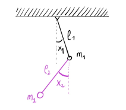

Hamiltonian Mechanics
1 Classical mechanics, from Newton to Lagrange and back
In this chapter we will review some basic concepts of classical mechanics. In particular we will briefly discuss variational calculus, Lagrangian mechanics and Newtonian mechanics, superficially presenting along the way some simple examples to motivate part of the rest of the course. For a deeper and more detailed account, you can refer to [Arn89, Kna18].
1.1 Newtonian mechanics
Our main interest will be in describing equations of motion of an idealized point particle. This is a point–like object obtained by ignoring the dimensions of the physical object. Note that in many cases this is a reasonable approximation, for example, when describing planetary motion around the sun, we can consider the planet and the sun as two point particles without affecting much the qualitative properties of the system. Of course this is not a universal simplification: for instance, we cannot do it when describing the motion of a planet around its axes.
For us, a point particle usually carries a mass \(m\). Its position in space is described by the position vector \(\vb *{x} = (x, y ,z)\). Keep in mind that
\(\seteqnumber{0}{}{0}\)\begin{equation} \vb *{x} : \mathbb {R}\to \mathbb {R}^3,\quad t \mapsto \vb *{x}(t), \end{equation}
is a function of time that describes the instantaneous state of the system during its evolution. In most cases, this will be implicitly assumed and we will omit the explicit dependence on \(t\).
The velocity of the point particle is given by the rate of change of the position vector, i.e., its derivative with respect to time1
\(\seteqnumber{0}{}{1}\)\begin{equation} \vb *{v} = \dv {\vb *{x}}{t} =: \dot {\vb *{x}} = (\dot {x}, \dot {y}, \dot {z}). \end{equation}
We call acceleration, the rate of change of the velocity, i.e., the second derivative
\(\seteqnumber{0}{}{2}\)\begin{equation} \vb *{a} = \dv [2]{\vb *{x}}{t} =: \ddot {\vb *{x}} = (\ddot {x}, \ddot {y}, \ddot {z}). \end{equation}
1 Notation: the symbol \(a := b\) means that \(a\) is defined by the expression \(b\), similarly \(b =: a\) is the same statement but read from right to left.
The mechanics of the particle is encoded by Newton’s second law of motion. That is, there exist frames of reference (i.e systems of coordinates) in which the motion of the particle is described by a differential equation involving the forces \(\vb *{F}\) acting on the point particle, its mass \(m\) and its acceleration as follows2
\(\seteqnumber{0}{}{3}\)\begin{equation} \label {eq:newton} \vb * F = m \ddot {\vb *{x}}. \end{equation}
2 This is not completely true, Newton was already talking about momentum, which makes a deep difference but would set us off-course right now.
Let’s leave it here for now, we will come back to it later on.
In general we will consider systems of \(N\) point particles. These will be described by a set of \(N\) position vectors \(\vb *{x}_k = (x_k, y_k ,z_k)\) with masses \(m_k\), \(k = 1, \ldots , N\). For convenience we will denote3 \(\vb *{x} = (\vb *{x}_1, \ldots , \vb *{x}_N)\in \mathbb {R}^{3N}\), and \(\vb *{m} = (m_1, \ldots , m_N)\in \mathbb {R}^N\). We call \(\vb *{x}(t)\) the configuration of the system at time \(t\) in the configuration space \(\mathbb {R}^{3N}\).
3 Here we are identifying \(\mathbb {R}^{3\times N}\), the space of \(3\times N\) matrices, and \(\mathbb {R}^{3N}\), the space of \(3N\) vectors. Namely, \(\vb *{x} = (\vb *{x}_1, \ldots , \vb *{x}_N) = (x_1, y_1, z_1, x_2, y_2, z_2, \ldots , x_N, y_N, z_N)\) is used interchangeably as the vector of positions of the points in three-space or as the vector including all the positions of the \(N\) bodies together.
-
Example 1.1. For example a system of two rigid pendulums in space constrained to oscillate on a vertical plane, is described by two position vectors, so \(\vb *{x} = (\vb *{x}_1, \vb *{x}_2)\in \mathbb {R}^{6}\). However, to describe their configuration we only need two angular variables, one for each of the pendulums. So, for all practical purposes, the system could be completely described4 by \(q = (q^1, q^2) \in \mathbb {S}^1\times \mathbb {S}^1 \simeq \mathbb {T}^2\). See Figure 1.1.
4 Here there is an hidden statement: \(\mathbb {S}^1\times \mathbb {S}^1 \simeq \mathbb {T}^2\). This should be read as: the 2-torus, the surface of a doughnut, is diffemorphic to the product of two circles. Here, diffeomorphic is a concept from the theory of smooth manifolds, and stands for the existence a smooth bijection between the two constructions. Note that \(\simeq \) usually denotes some kind of equivalence, but which specific kind is context-dependent and not often well explicited.
We say that a system of \(N\) particles has \(n\) degrees of freedom if we need \(n\) independent parameters to uniquely specify the system configuration5. We call generalized coordinates any set of \(n\) parameters \(q = (q^1, \ldots , q^n)\) that uniquely determine the configuration of a system with \(n\) degrees of freedom, and generalized velocities their time derivatives \(\dot q = (\dot q^1, \ldots , \dot q^n)\). The state of the system is then characterized by the set of (generalized) coordinates and velocities \((q, \dot q) = \left (q^1, \ldots , q^n,\dot q^1, \ldots , \dot q^n\right )\).
If you recall differential geometry, you may (correctly) guess that the generalized coordinates will be points on some differentiable manifold \(q\in M\), their evolution will be described by a curve \(q: \mathbb {R} \to M\) parametrized by time and the state of the system will be a point in the tangent bundle \((q, \dot q)\in TM\), i.e., \(\dot q \in T_q M\) (see also section 1.4).
We have now all the elements to translate the Newtonian principle of determinacy in mathematical terms. In 1814, Laplace [Lap51] wrote
We may regard the present state of the universe as the effect of its past and the cause of its future. An intellect which at a certain moment would know all forces that set nature in motion, and all positions of all items of which nature is composed, if this intellect were also vast enough to submit these data to analysis, it would embrace in a single formula the movements of the greatest bodies of the universe and those of the tiniest atom; for such an intellect nothing would be uncertain and the future just like the past would be present before its eyes.
In other words, this principle states that the initial state \(\left (q(t_0), \dot q(t_0)\right )\) uniquely determines its evolution \(\left (q(t),\dot q(t)\right )\) for \(t > t_0\). The Picard-Lindelöf theorem6 implies that the Newtonian principle of determinacy is locally satisfied by the equations of motion of the mechanical system, i.e., second order differential equations derived from Newton’s law.
5 As Example 1.1 shows, the \(n\) degrees of freedom do not have to be the cartesian coordinates of the point particles.
6 Also known as “Existence and uniqueness of solutions of initial value problems”, [Kna18, Theorem 3.17].
1.1.1 Motion in one degree of freedom
Before taking a little detour into Lagrangian mechanics, let’s anticipate some of the upcoming concepts in a few simple cases.
-
Example 1.2 (Horizontal spring and pendulum). Consider an idealized system consisting of a point particle of mass \(m\) attached to a spring with stiffness \(k\), sliding on a frictionless surface. Assume that the motion is one-dimensional along the axis of the spring and let \(x\) denote the displacement of the system from its equilibrium position, i.e., the position in which the spring is completely at rest: not compressed nor extended. We consider this system to exclude gravitational forces from the picture.
Hooke’s law states that the restoring force \(F\) exerted by the spring on whatever is pulling its free end scales linearly with respect to the distance it’s been pulled: i.e., \(F(x) = - k x\), see Figure 1.2 left. According to (1.4), then, the motion of the point particle is given by
\(\seteqnumber{0}{}{4}\)\begin{equation} \label {eq:spring} m \ddot {x} = - k x \qquad \mbox {or}\qquad \ddot {x} = - \omega ^2 x \quad \mbox {where } \omega = \sqrt {k/m}. \end{equation}
The solution, \(x(t)\), is generally described by
\(\seteqnumber{0}{}{5}\)\begin{equation} \label {eq:springsol} x(t) = R \cos (\omega t + \phi ), \end{equation}
with the unknowns \(R\) and \(\phi \) uniquely prescribed by the initial conditions
\(\seteqnumber{0}{}{6}\)\begin{equation} x(0) = R\cos (\phi ) \qquad \mbox {and}\qquad \dot x(0) = -\omega R \sin (\phi ). \end{equation}
Clearly, once we know the initial conditions, the full evolution of the solution \(x(t)\) is known, in agreement with Newton’s principle of determinacy.
Figure 1.2: Left: horizontal spring. Right: planar pendulum.
Consider, now, a point particle of mass \(m\) attached to a pivot on the ceiling via a rigid rod of length \(l\). Assume the motion is frictionless and happening only in the vertical direction. Let \(x\) denote the angle of displacement of the system from its equilibrium position, i.e., the lowest point on the arc of motion. Take the angle at equilibrium to be zero, with positive sign on the right hand side of the vertical, and negative on the left.
The force acting on the pendulum is Earth’s gravitational attraction. According to (1.4), then, the motion of the point particle is given by
\(\seteqnumber{0}{}{7}\)\begin{equation} m l \ddot {x} = - m g \sin (x) \qquad \mbox {or}\qquad \ddot {x} = - \omega ^2 \sin (x) \quad \mbox {where } \omega = \sqrt {g/l}. \end{equation}
Here, \(g \approx 9.8 m s^{-2}\) denotes the gravitational acceleration.
Although it is possible to solve the equation of motion of the pendulum by means of elliptic integrals, this is rather cumbersome. Under certain conditions, when \(\sin x \approx x\), we can actually avoid doing this and instead we use the equation of the spring as a model for the pendulum oscillation via the so-called called small oscillations approximation. We will come back to this later on.
-
Example 1.3 (Idealized motion of the Earth around the Sun). Let us approximate the Sun with a point particle of mass \(M\) positioned at the origin \(\vb *{0}\in \mathbb {R}^3\) of the Euclidean space. In this solar system, with the Sun fixed at the origin, we will describe the Earth by a point particle of mass \(m\) whose position (and motion) is described by a vector \(\vb *{x}\in \mathbb {R}^3\).
Due to our choice of coordinates, the gravitational attraction of the Sun acts in direction \(-\vb *{x}(t)\). Newton’s law of universal gravitation says that such a force is proportional to
\(\seteqnumber{0}{}{8}\)\begin{equation} \frac {GmM}{\|\vb *{0}-\vb *{x}\|^2} = \frac {GmM}{\|\vb *{x}\|^2}, \end{equation}
where \(G \sim 6.674 \cdot 10^{-11} \frac {m^3}{s^2\,kg}\) is called the gravitational constant. Once we collect all the elements into Newton’s second law (1.4), we obtain the equation of motion
\(\seteqnumber{0}{}{9}\)\begin{equation} \label {eq:keplerex} m \ddot {\vb *{x}} = - G\frac {mM}{\|\vb *{x}\|^2} \frac {\vb *{x}}{\|\vb *{x}\|}. \end{equation}
This is an autonomous second order ordinary differential equation on the configuration space \(\mathbb {R}^3\setminus \big \{\vb *{0}\big \}\). Providing the initial conditions \(\vb *{x}(0)=\vb *{x}_0\) and \(\dot {\vb *{x}}(0)=\vb *{v}_0\), we can try to explicitly solve (1.10), however in this case we could already get a lot of insight by taking a slightly different point of view.
Behind differential equations in classical mechanics lies a surprisingly rich geometrical structure, in which conserved quantities play a special role. These can help to obtain extensive information on the solution of classical equations of motion without the need to explicitly solve the equations (which would be, in general, impossible).
On the tangent bundle \((\mathbb {R}^3\setminus \big \{\vb *{0}\big \})\times \mathbb {R}^3\), let us define the total energy
\(\seteqnumber{0}{}{10}\)\begin{equation} \label {eq:energyKepler} E(\vb *{x},\vb *{v}) = \frac {1}{2}m\|\vb *{v}\|^2 - \frac {GmM}{\|\vb *{x}\|}, \end{equation}
the angular momentum
\(\seteqnumber{0}{}{11}\)\begin{equation} L(\vb *{x},\vb *{v}) = m \vb *{v} \wedge \vb *{x}, \end{equation}
and the Laplace-Runge-Lenz vector
\(\seteqnumber{0}{}{12}\)\begin{equation} A(\vb *{x},\vb *{v}) = m \vb *{v} \wedge L(\vb *{x}, \vb *{v}) + \frac {G m^2 M^2}{m+M} \frac {\vb *{x}}{\|\vb *{x}\|}. \end{equation}
Along the solutions of (1.10), let us define \(E(t):=E(\vb *{x}(t),\dot {\vb *{x}}(t))\) and, similarly, \(L(t)\) and \(A(t)\). Then, there exist solutions such that \(L(t) = L(0) \neq 0\) for all times, and also \(E(t) = E(0)\) and \(A(t) = A(0)\). Furthermore, a solution that lives on the “submanifold” defined by
\(\seteqnumber{0}{}{13}\)\begin{equation} \begin{aligned} \big \{ & (\vb *{x}, \vb *{v})\in (\mathbb {R}^3\setminus \big \{\vb *{0}\big \})\times \mathbb {R}^3 \;\mid \\ & \; E(\vb *{x},\vb *{v}) = E(\vb *{x}_0, \vb *{v}_0),\; L(\vb *{x},\vb *{v}) = L(\vb *{x}_0, \vb *{v}_0),\; A(\vb *{x},\vb *{v}) = A(\vb *{x}_0, \vb *{v}_0) \big \}, \end {aligned} \end{equation}
must be a conic of the following type
\(\seteqnumber{0}{}{14}\)\begin{equation} \begin{split} \mbox {ellipse} \quad \mbox {if} \quad E(t) = E(0) < 0, \\ \mbox {parabola} \quad \mbox {if} \quad E(t) = E(0) = 0, \\ \mbox {hyperbola} \quad \mbox {if} \quad E(t) = E(0) > 0. \end {split} \end{equation}
This is an example of a central force field, and is one of the most prominent and most important examples in this course. The impatient reader can find in [Kna18, Ch. 1] a nice and compact derivation of Kepler’s laws and the invariants above from (1.10) and its solutions.
1.2 Hamilton’s variational principle
In order to leave more space to discuss Hamiltonian systems and their geometry, we will be brief7 in our account of Lagrangian mechanics and calculus of variations. For a more detailed account refer to [Arn89, Part II]. This, however, should not confuse you: Lagrangian mechanics plays a role as large as Hamiltonian mechanics in the development of classical mechanics.
In fact, one should not be surprised if there are many sources claiming that the most general formulation of the equations of motion in classical mechanics comes from the principle of least action or Hamilton’s variational principle.
According to this principle, stated in 1834, the equations of motion of a mechanical system are characterized by a function \(L \equiv L(q, \dot q, t) : \mathbb {R}^n \times \mathbb {R}^n \times \mathbb {R} \to \mathbb {R}\), called the lagrangian (function) of the system.
7 Although not as brief as a twitter thread.
-
Example 1.4. The lagrangian of a non-relativistic particle with mass \(m > 0\) in a potential \(U : \mathbb {R}^n \to \mathbb {R}\) is
\(\seteqnumber{0}{}{15}\)\begin{equation} L(q, \dot q, t) = \frac 12 m \|\dot q\|^2 - U(q), \end{equation}
which is the difference between the so-called kinetic energy of the particle and its so-called potential energy. We will see where this equation comes from in Section 1.2.1.
Given a curve \(\gamma :[t_1, t_2] \to \mathbb {R}^n\), we define the action functional
\(\seteqnumber{0}{}{16}\)\begin{equation} \label {eq:Laction} S[\gamma ] := \int _{t_1}^{t_2} L(\gamma (s), \dot \gamma (s), s) \dd s. \end{equation}
Assume that the configuration of our system is \(q_1 = (q_1^1, \ldots , q_1^n)\) at an initial time \(t=t_1\) and \(q_2 = (q_2^1, \ldots , q_2^n)\) at a final time \(t = t_2\). The principle of least action, or Hamilton’s principle, states that the evolution of our system in the time interval \([t_1, t_2]\) corresponds to the curve \(q(t)\) which is the critical point of the action functional \(S[q]\) on the space of curves \(q(t)\) with \(q(t_1) = q_1\) and \(q(t_2) = q_2\).
To make this precise, we will need to recall some preliminary concepts and make sense of differentiation in \(\infty \)-dimensional spaces.
Let \(X\) and \(Y\) be Banach spaces8 and \(G\subset X\) an open subset of \(X\). A function \(f: G \to Y\) is called Fréchet differentiable at \(x\in G\), if there exists a bounded linear operator \(A: X \to Y\), such that9
\(\seteqnumber{0}{}{18}\)\begin{equation} \label {eq:frechetdiff} f(x+h) = f(x) + Ah + o(\|h\|_X) \end{equation}
for any \(h\) in a sufficiently small neighborhood of \(0\in X\). Alternatively, you can say asymptotically as \(\|h\|_X\to 0\).
As in the finite-dimensional case, \(A\) is uniquely determined and is called the Fréchet derivative of \(f\) at \(x\) and is denoted \(D f(x)\).
8 Banach space: complete normed vector space.
9 Here, \(g = o(\|h\|_X)\) if
\(\seteqnumber{0}{}{17}\)\begin{equation} \lim _{\|h\| \to 0} \frac {\|g(h)\|_Y}{\|h\|_X} = 0. \end{equation}
-
Remark 1.1.
-
1. In the finite dimensional setting, Fréchet differentiability corresponds to total differentiability. As with the finite dimensional case, Fréchet’s differentiability implies the continuity of the mapping.
-
2. The analogy with the finite dimensional case goes further. Indeed, the chain rule, mean value theorem, implicit functions theorem, inverse mapping theorem and statements about local extremes with and without constraints, all hold also for differentiable functions on Banach spaces.
-
3. Requiring the operator \(A\) to be bounded is crucial. In \(\infty \)-dimensional normed spaces, linearity does not imply continuity.
-
4. In calculus of variation, the curve \(h\) from the small neighborhood of \(0\in X\), is usually called a variation and denoted \(\delta x\).
-
Let \(f: X \to \mathbb {R}\) be a (Fréchet) differentiable function and \(X_0 \subset X\) be a subspace of \(X\). Then \(\gamma _\star \) is a critical point of \(f\) with respect to \(X_0\) if
\(\seteqnumber{0}{}{19}\)\begin{equation} Df(\gamma _\star )\Big |_{X_0} = 0, \quad \mbox {i.e.}\quad Df(\gamma _\star )h = 0 \mbox { for all } h\in X_0. \end{equation}
It is possible to show that the space of curves
\(\seteqnumber{0}{}{20}\)\begin{equation} X := \big \{ \gamma : [t_1, t_2] \to M \mid \gamma \mbox { is twice continuously differentiable}\big \}, \end{equation}
equipped with the norm
\(\seteqnumber{0}{}{21}\)\begin{equation} \|\gamma \|_X := \|\gamma \|_\infty + \|\dot \gamma \|_\infty + \|\ddot \gamma \|_\infty , \end{equation}
is a Banach space, and \(X_0 = \big \{h\in X \mid h(t_1) = h(t_2) = 0\big \}\) with the induced norm, is a Banach subspace of \(X\).
Therefore, the action defined above is a functional
\(\seteqnumber{0}{}{22}\)\begin{equation} S : X \to \mathbb {R},\qquad \gamma \mapsto S[\gamma ], \end{equation}
and the evolution of the system is described by the critical points with respect to \(X_0\) of \(S\) on the space of \(\gamma \in X\) with prescribed endpoints.
-
Theorem 1.1. Let \(L = L(q, \dot q, t) : \mathbb {R}^{n}\times \mathbb {R}^{n}\times \mathbb {R} \to \mathbb {R}\) be differentiable. The equations of motion for the mechanical system with lagrangian \(L\) are given by the Euler-Lagrange equations
\(\seteqnumber{0}{}{23}\)\begin{equation} \label {eq:eulerlagrange} \frac {\dd }{\dd t}\frac {\partial L}{\partial \dot q^i} - \frac {\partial L}{\partial q^i} = 0, \quad i=1,\ldots n. \end{equation}
-
Proof. We need to show that any critical point of \(S\) with respect to \(X_0\) has to satisfy (1.24).
First of all observe that for small \(h\), we get
\(\seteqnumber{0}{}{24}\)\begin{align} S(\gamma + h) &= \int _{t_1}^{t_2} L(\gamma + h, \dot \gamma + \dot h, s) \dd s \\ &= \int _{t_1}^{t_2} L(\gamma , \dot \gamma , s) \dd s \\ &\quad + \int _{t_1}^{t_2} \left [ \left \langle \frac {\partial L}{\partial q}(\gamma , \dot \gamma , s),\; h(s) \right \rangle + \left \langle \frac {\partial L}{\partial \dot q}(\gamma , \dot \gamma , s),\; \dot h(s) \right \rangle \right ] \dd s \\ &\quad + O(\|h\|^2_X), \end{align} where the inner product \(\langle \cdot ,\cdot \rangle \) is the usual scalar product in \(\mathbb {R}^n\).
Therefore,
\(\seteqnumber{0}{}{28}\)\begin{align} S(\gamma +h) - S(\gamma ) &= \int _{t_1}^{t_2} \left [ \left \langle \frac {\partial L}{\partial q}(\gamma , \dot \gamma , s),\; h(s)\right \rangle + \left \langle \frac {\partial L}{\partial \dot q}(\gamma , \dot \gamma , s),\; \dot h(s)\right \rangle \right ] \dd s\\ &\quad + O(\|h\|^2_X)\\ &= \left \langle \frac {\partial L}{\partial \dot q}(\gamma , \dot \gamma , s),\; h(s)\right \rangle \Big |_{t_1}^{t_2} \\ &\quad + \int _{t_1}^{t_2} \left \langle \frac {\partial L}{\partial q}(\gamma , \dot \gamma , s) - \frac {\dd }{\dd s}\frac {\partial L}{\partial \dot q}(\gamma , \dot \gamma , s) ,\; h(s)\right \rangle \dd s\\ &\quad + O(\|h\|^2_X). \end{align}
The differential \(DS(\gamma ): X \to \mathbb {R}\) can now be read from the equation above and is well–defined and is a bounded linear operator for all \(\gamma \in X\).
For \(h\in X_0\), the first term \(\left \langle \frac {\partial L}{\partial \dot q}(\gamma , \dot \gamma , s),\; h(s)\right \rangle \Big |_{t_1}^{t_2}\) has to vanish. Therefore, for \(\gamma \) to be a critical point for \(S\) it follows that the inner product
\(\seteqnumber{0}{}{33}\)\begin{equation} \left \langle \frac {\partial L}{\partial q}(\gamma , \dot \gamma , s) - \frac {\dd }{\dd s}\frac {\partial L}{\partial \dot q}(\gamma , \dot \gamma , s) ,\; h(s)\right \rangle = 0 \quad \mbox {for all } h\in X_0. \end{equation}
Our choice of \(h\) is arbitrary, so after a relabeling of the time, this implies10
\(\seteqnumber{0}{}{34}\)\begin{equation} \label {eq:EL-from-proof} \frac {\partial L}{\partial q}(\gamma , \dot \gamma , t) - \frac {\dd }{\dd t}\frac {\partial L}{\partial \dot q}(\gamma , \dot \gamma , t) = 0, \end{equation}
which, expanded, means
\(\seteqnumber{0}{}{35}\)\begin{equation} \frac {\dd }{\dd t}\frac {\partial L}{\partial \dot q^i}(\gamma , \dot \gamma , t) - \frac {\partial L}{\partial q^i}(\gamma , \dot \gamma , t) = 0, \quad i=1,\ldots n. \end{equation}
□
-
Remark 1.2. The solution \(q=q(t)\) of the Euler-Lagrange equations is just a critical point of the \(S\) functional:
\(\seteqnumber{0}{}{36}\)\begin{equation} S[q + \delta q] - S[q] = O(\|\delta q\|^2). \end{equation}
It does not have to be a minimum. However, under some additional conditions it can be proven to be a local minimum. For example, if the matrix of second derivatives
\(\seteqnumber{0}{}{37}\)\begin{equation} \label {eq:hsd} \Lambda := \left ( \frac {\partial ^2 L}{\partial \dot q^i \partial \dot q^j} \right )_{1\leq i,j\leq n} \end{equation}
is positive definite. This case is thoroughly studied in calculus of variation and in some instances of differential geometry.
-
Corollary 1.2. If the lagrangian of the system is non–degenerate, i.e., it satisfies the condition
\(\seteqnumber{0}{}{38}\)\begin{equation} \det \left (\frac {\partial ^2 L}{\partial \dot q^i \partial \dot q^j} \right )_{1\leq i,j\leq n} \neq 0 \end{equation}
then it satisfies Newton’s determinacy principle.
-
Proof. For a non–degenerate lagrangian, a direct computation shows that the Euler-Lagrange equations can be rewritten in the form
\(\seteqnumber{0}{}{39}\)\begin{equation} \ddot q^i = f^i(q,\dot q, t) := \Lambda ^{ij}\left (\frac {\partial L}{\partial q^j} - \frac {\partial ^2 L}{\partial \dot q^j \partial q^k} \dot q^k - \frac {\partial ^2 L}{\partial \dot q^j \partial t}\right ), \quad i=1,\ldots ,n. \end{equation}
Here \(\left (\Lambda ^{ij}\right ) = \left (\Lambda ^{ij}(q, \dot q, t)\right )\) are the coefficients of the inverse to the matrix (1.38), i.e.,
\(\seteqnumber{0}{}{40}\)\begin{equation} \Lambda ^{ik} \frac {\partial ^2 L}{\partial \dot q^k \partial \dot q^j} = \delta _{ij}, \end{equation}
and it is crucial to remember that we are always using Einstein’s convention11. □
In other words, we can use Euler-Lagrange equations as the equations of motion of a mechanical system with non–degenerate lagrangian.
-
Remark 1.3. The lagrangian of a mechanical system is defined only up to total derivatives. Or, in other words, the equations of motion remain unchanged if we add a total derivative to the lagrangian function:
\(\seteqnumber{0}{}{41}\)\begin{equation} \widetilde L(q,\dot q, t) = L(q, \dot q, t) + \frac {\dd }{\dd t} f(q,t). \end{equation}
The action \(\widetilde S\) of a system with lagrangian \(\widetilde L\) is
\(\seteqnumber{0}{}{42}\)\begin{align} \widetilde S[q] & = \int _{t_1}^{t_2} \widetilde L(q, \dot q, t) \,\dd t \\ & = \int _{t_1}^{t_2} L(q, \dot q, t) \,\dd t + \int _{t_1}^{t_2} \frac {\dd }{\dd t} f(q,t) \,\dd t \\ & = S[q] + f(q_2, t_2) - f(q_1, t_1). \end{align} As the additional \(f\)-dependent part is constant,
\(\seteqnumber{0}{}{45}\)\begin{equation} \widetilde S[q+\delta q] - \widetilde S[q] = S[q+\delta q] - S[q] \end{equation}
and thus the critical points of the two actions are the same.
Similarly, the lagrangian of a mechanical system does not change if it is multiplied by a constant factor: \(\widetilde L = \alpha L\).
As an aside, quantum mechanical systems no longer remain invariant under the transformations above. Transformations of the first type lead to rather subtle and interesting effects related to topology, while the number \(\alpha \) is related to Planck’s constant.
Coming back to our discussion: with so much freedom, how does one choose a normalization for the lagrangian then? One way, is by using the principle of additivity.
Assume that a mechanical system is the combination of two subsystems, say \(A\) and \(B\). Let \(L_A\) and \(L_B\) be their respective lagrangian as if they were isolated (or closed) systems. The principle of additivity says that by moving the two subsystems farther apart from each other, in the limit of infinite distance, the lagrangian of the full system tends to the limit lagrangian
\(\seteqnumber{0}{}{46}\)\begin{equation} L_{\lim } = L_A + L_B. \end{equation}
1.2.1 Dynamics of point particles: from Lagrange back to Newton
Mechanical laws for the same system can look very different from each other, with varying degrees of simplification or complication: think for example as the motion of planets in a geocentric system of coordinates. There is a system of coordinates that simplifies our life the most: the inertial coordinate system.
The galilean principle of relativity says that there exist coordinate systems, called inertial, with the following two properties
-
1. all the laws of nature at all moments of time are the same in all inertial coordinate systems;
-
2. all coordinate systems in uniform rectilinear motion with respect to an inertial one are themselves inertial.
Although the discussion on the group theoretical aspects of classical mechanics, which very much relates to this discussion, is very interesting and fascinating we will not discuss it here further, we leave [MR99] as an interesting reference.
For our concerns, an inertial system of coordinates on the galilean space-time is an isomorphism with the “standard” galilean structure \(\mathbb {R}\times \mathbb {R}^3\). If \((t, \vb *{x}) \in \mathbb {R}\times \mathbb {R}^3\) is an element of the “standard” galilean space-time, we call galilean transformations the transformations \((t,\vb *{x}) \to (\widetilde t, \widetilde {\vb *{x}})\) listed below
-
1. translations: \(\widetilde t = t + t_0\), \(\widetilde {\vb *{x}} = \vb *{x} + \vb *{x}_0\), for \(t_0\in \mathbb {R}\), \(\vb *{x}_0\in \mathbb {R}^3\);
-
2. rotations and reflections: \(\widetilde t = t\), \(\widetilde {\vb *{x}} = G\vb *{x}\) for \(G\in O(3)\);
-
3. uniform motions with velocity \(\vb *{v}\in \mathbb {R}^3\): \(\widetilde t = t\), \(\widetilde {\vb *{x}} = \vb *{x} + \vb *{v} t\).
Then, the galilean principle of relativity says that the lagrangian of a closed mechanical system is invariant, modulo the sum of total derivatives, with respect to the galilean transformations.
Figure 1.3: A graphical introduction to Newton’s laws of motion, courtesy of Constanza Rojas- Molina. If you feel creative, consider contributing to the #mathyear challenge.
We will now see how we can derive Newton’s laws from Hamilton’s principle as a consequence of the galilean principle of relativity. For an alternative discussion on this topic see [Arn89, Chapters 1.1 and 1.2].
-
Theorem 1.3. The lagrangian of an isolated point particle in an inertial system of coordinates has the form
\(\seteqnumber{0}{}{47}\)\begin{equation} \label {eq:singleptlag} L(\dot {\vb *{x}}) = \frac {m\,\|\dot {\vb *{x}}\|^2}2 \end{equation}
where \(m\in \mathbb {R}\) is a constant called the mass of the point particle.
-
Proof. The invariance from translations implies that the lagrangian must be independent from \(t\) and \(\vb *{x}\), while the invariance from orthogonal transformations implies that it must be dependent on the square of the velocities:
\(\seteqnumber{0}{}{48}\)\begin{equation} L = L(\|\dot {\vb *{x}}\|^2), \quad \|\dot {\vb *{x}}\|^2 := \langle \dot {\vb *{x}}, \dot {\vb *{x}}\rangle . \end{equation}
The invariance with respect to uniform motion now implies that the lagrangian must actually be proportional to \(\|\dot {\vb *{x}}\|^2\). For convenience, let’s first look at the case of small velocities: applying the galilean transformation
\(\seteqnumber{0}{}{49}\)\begin{equation} \vb *{x} \mapsto \vb *{x} + \epsilon \vb *{v}t, \end{equation}
in the limit \(\epsilon \to 0\), we can apply a Taylor expansion around \(\|\dot {\vb *{x}}\|^2\) to get
\(\seteqnumber{0}{}{50}\)\begin{equation} L(\|\dot {\vb *{x}}\|^2) \mapsto L(\|\dot {\vb *{x}}\|^2) + 2\epsilon \,\langle \vb *{v}, \dot {\vb *{x}}\rangle \,L'(\|\dot {\vb *{x}}\|^2) + O(\epsilon ^2). \end{equation}
The invariance of the equations of motion then implies that the linear term in \(\epsilon \) should be a total derivative \(\frac {\dd }{\dd t} f(t, \vb *{x}) = 2\,\langle \vb *{v}, \dot {\vb *{x}}\rangle \,L'(\|\dot {\vb *{x}}\|^2)\). This can happen iff \(\dot f(t, \vb *{x}) = 0\) and \(\langle \frac {\partial f}{\partial \vb *{x}}, \dot x\rangle = 2\,\langle \vb *{v}, \dot {\vb *{x}}\rangle L'(\|\dot {\vb *{x}}\|^2)\) is linear also in \(\|\dot {\vb *{x}}\|^2\). In particular this means that \(L'(\|\dot {\vb *{x}}\|^2) = \mathrm {const} =: \frac {m}2\), that is, the lagrangian is of the form (1.48) for some constant value \(m\in \mathbb {R}\). Finally, the lagrangian (1.48) is transformed by a general galilean transformation \(\vb *{x} \mapsto \vb *{x} + \vb *{v}t\) into
\(\seteqnumber{0}{}{51}\)\begin{equation} \frac {m \|\dot {\vb *{x}}\|^2}2 \mapsto \frac {m \|\dot {\vb *{x}}\|^2}2 + m\,\langle \vb *{v},\dot {\vb *{x}}\rangle + \frac {m \vb *{v}^2}2 = \frac {m \|\dot {\vb *{x}}\|^2}2 + \frac {\dd }{\dd t}\left (m\,\langle \vb *{v},\vb *{x}\rangle + \frac {m \vb *{v}^2 t}2\right ), \end{equation}
and thus the equations of motion remain invariant under the transformation. □
-
Proof. It follows immediately by computing the Euler-Lagrange equations for (1.48):
\(\seteqnumber{0}{}{52}\)\begin{equation} \frac {\dd }{\dd t} \frac {\partial L}{\partial \dot x^i} - \frac {\partial L}{\partial x^i} = m \ddot x^i = 0, \qquad i=1,2,3. \end{equation}
□
Remembering the additive property of the lagrangians, we can show that for a system of \(N\) particles, which do not interact, the lagrangian is the sum
\(\seteqnumber{0}{}{53}\)\begin{equation} \label {eq:freel} L = \sum _{k=1}^N \frac {m_k \|\dot {\vb *{x}}_k\|^2}{2}. \end{equation}
We call lagrangians of this form free.
-
Remark 1.4. The above definition of mass becomes only meaningful, when we take the additive property into account. A lagrangian can always be multiplied by an arbitrary constant without affecting the equations of motion; such multiplication then amounts to a change in the unit of mass. The ratios of the masses remain unchanged by this and it is only these ratios which are physically meaningful.
To include interaction between the points in this picture, we need to add to the free lagrangian (1.54) a function \(-U(\vb *{x}_1, \ldots , \vb *{x}_N)\) which depends on the nature of the interactions:
\(\seteqnumber{0}{}{54}\)\begin{equation} \label {eq:mechlag} L := T-U := \sum _{k=1}^N \frac {m_k \|\dot {\vb *{x}}_k\|^2}{2} -U(\vb *{x}_1, \ldots , \vb *{x}_N). \end{equation}
The first sum, \(T = \sum _{k=1}^N \frac {m_k \|\dot {\vb *{x}}_k\|^2}{2}\), is called kinetic energy of the particles, while the function \(U = U(\vb *{x}_1, \ldots , \vb *{x}_N)\) is called potential energy. Lagrangians of the form \(T-U\) are often called natural.
-
Theorem 1.5. The equations of motion of a system of \(N\) point particles with natural lagrangian (1.55) are of the form
\(\seteqnumber{0}{}{55}\)\begin{equation} \label {eq:newton2} m_k \ddot {\vb *{x}}_k = \vb *{F}_k, \quad k=1,\ldots ,N \end{equation}
where \(\vb *{F}_k = -\frac {\partial U}{\partial \vb *{x}_k}\), \(\quad k=1,\ldots ,N\).
The vector \(\vb *{F}_k\) is called the force acting on the \(k\)-th point particle, and you should immediately recognize Newton’s second law in (1.56).
-
Exercise 1.1. Prove Newton’s third law, i.e., for each of the \(k\) point particles it holds
\(\seteqnumber{0}{}{56}\)\begin{equation} \vb *{F}_k = -\sum _{j\neq k} \vb *{F}_j. \end{equation}
Hint: use the invariance with respect to spatial translations or sneak peek forward to the conservation of total momentum.
-
-
1. Mechanical systems are reversible: they are also invariant with respect to the transformation \(t\mapsto -t\).
-
2. If you consider systems in interaction with the environment, you end up with lagrangians that are no longer invariant with respect to galilean transformations and can explicitly depend on time.
-
-
Example 1.5. Consider the vertical motion of a point particle of mass \(m\) in the external field with potential \(U(z) = m g z\), see also Example 1.2. The natural lagrangian of the system is
\(\seteqnumber{0}{}{57}\)\begin{equation} L = \frac {m\dot z^2}2 - mgz, \end{equation}
which corresponds to the equation of motion \(\ddot z = -g\): this is the equation of motion of a point particle in free fall towards Earth. In agreement with Galileo’s law, the acceleration is constant and does not depend on the mass.
-
Example 1.6. The motion of \(N\) point particles with masses \(m_1, \ldots , m_N\) in their gravitational field, is described by the lagrangian
\(\seteqnumber{0}{}{58}\)\begin{equation} L = \sum \frac {m_k \|\dot {\vb *{x}}_k\|^2}{2} + \sum _{k < l} G \frac {m_k m_l}{\|\vb *{x}_k - \vb *{x}_l\|}, \end{equation}
where \(G\) is the gravitational constant.
To study the approximate description of the motion of a planet of mass \(m\) around the Sun, which has mass \(M \gg m\), one can assume the effects of the planet on the Sun to be negligible and ignore the interaction with the other planets.
In such a case, the motion of the planet is described by the lagrangian of a point particle with a Newtonian gravitational potential
\(\seteqnumber{0}{}{59}\)\begin{equation} L = \frac {m\|\dot {\vb *{x}}\|^2}{2} + \frac {G M m}{\|\vb *{x}\|}, \end{equation}
whose equation of motion should remind you of (1.10) from Example 1.3.
To understand better why \(T\) in (1.55) is called kinetic energy, it is useful to look at its relation with Newton’s second law (1.56):
\(\seteqnumber{0}{}{60}\)\begin{equation} \frac {\dd }{\dd t} T = m \langle \dot {\vb *{x}}(t), \ddot {\vb *{x}}(t)\rangle = \left \langle \dot {\vb *{x}}(t), \vb *{F}(\vb *{x}(t))\right \rangle . \end{equation}
This confirms the intuitive notion that the kinetic energy should increase if a force pushes the particle in the direction of the current motion and should decrease when it pulls the particle in the opposite direction.
There is more, in fact
\(\seteqnumber{0}{}{61}\)\begin{equation} T(t_1) - T(t_0) = \int _{t_0}^{t_1} \left \langle \dot {\vb *{x}}(t), \vb *{F}(\vb *{x}(t))\right \rangle \; \dd t = \int _{\vb *{x}_0}^{\vb *{x}_1} \left \langle \vb *{F}(\vb *{x}), \dd {\vb *{x}}\right \rangle , \end{equation}
where \(\vb *{x}_i := \vb *{x}(t_i)\). This is equivalent to say that the change of kinetic energy is equal to the work done by the force, i.e., the integral of \(\vb *{F}\) along the curve \(\vb *{x}(t)|_{t\in [t_0, t_1]}\). The name comes from the fact that, physically, you can think of \(F(\vb *{x}) \cdot \dd {\vb *{x}}\) as the infinitesimal contribution of the vector field to the acceleration.
-
Remark 1.6. For \(N=1\), Stokes’ theorem implies that the integral above is independent from the path between \(\vb *{x}_0 = \vb *{x}(t_0)\) and \(\vb *{x}_1 = \vb *{x}(t_1)\) if and only if \(\curl \vb *{F} = 0\), which in turn is true if and only if there is a \(U:\mathbb {R}^3\to \mathbb {R}\) such that \(\vb *{F} = -\frac {\partial U}{\partial \vb *{x}}\). In fact, this is true in any dimension by using the general version of Stokes’ theorem: the work done by the force depends only on the endpoints of the integral if and only if there is \(U:\mathbb {R}^n\to \mathbb {R}\), unique up to an additive constant, such that \(\vb *{F} = -\frac {\partial U}{\partial \vb *{x}}\). You can read more about this in [Arn89, Chapter 2.5] and [Kna18, Theorem 6.3 and 8.1].
Forces that can be written in the form \(\vb *{F} = -\frac {\partial U}{\partial \vb *{x}}\), for some function \(U\), are called conservative. We will understand better why in a couple of sections.
Not all the forces in nature are conservative, and in that case the results of this section do not directly apply. We don’t have to go very far to see an example of this, but we can also see that the lagrangian approach can be easily extended to include non-conservative forces.
-
Example 1.7. Mechanical systems affected by an external magnetic field \(\vb * B\) can be described in the lagrangian formalism by adding a linear term in the velocities to a natural lagrangian (1.55):
\(\seteqnumber{0}{}{62}\)\begin{equation} \label {eq:magLag} \widetilde L = L + \frac ec \sum _{k=1}^N \langle \vb * A(\vb *{x}_k), \dot {\vb *{x}}_k\rangle . \end{equation}
Here the constant \(e\) is the electric charge of the point particles and \(c\) is the speed of light in vacuum. The magnetic field is given by \(\vb * B = \curl \vb * A\), the vector field \(\vb * A\) is called magnetic vector potential.
We will not see this in the course, but magnetic phenomenons have a natural description only in the relativistic approach. We see a hint of this fact here, in that (1.63) is not invariant with respect to the galilean transformations.
-
Exercise 1.2. Show that the equations of motion (1.56) corresponding to a magnetic lagrangian (1.63) are given by
\(\seteqnumber{0}{}{63}\)\begin{equation} m_k \ddot {\vb *{x}}_k = \vb *{F}_k + \frac ec \dot {\vb *{x}}_k \wedge \vb * B(\vb *{x}_k) \end{equation}
where the exterior product corresponds to the usual vector product in \(\mathbb {R}^3\) and, as mentioned above, \(\vb * B = \curl \vb * A\) is the magnetic field.
The additional term \(\frac ec \dot {\vb *{x}}_k\wedge \vb * B(\vb *{x}_k)\) is the Lorenz force acting on the \(k\)th particle of charge \(e\) immersed in the magnetic field \(\vb * B\).
For a beautiful geometric discussion of this problem, you can refer to [AMR88, Chapter 8.3] (this has moved to Chapter 9.3 in more recent editions).
Note that the magnetic vector potential is not unique! For any function \(f\), the transformation
\(\seteqnumber{0}{}{64}\)\begin{equation} \vb * A \mapsto \vb * A + \frac {\partial f}{\partial \vb *{x}} \end{equation}
will produce the same field. This is known as gauge transformation. Under this transformation the lagrangian is transformed as
\(\seteqnumber{0}{}{65}\)\begin{equation} \widetilde L \mapsto \widetilde L + \frac {e}{c} \frac {\dd f}{\dd t} \end{equation}
but we know that the equations of motion remain invariant under the addition of a total derivative to the Lagrangian. The concept of gauge invariance is central in lots of modern physics.
-
1.3 First steps with conserved quantities
1.3.1 Back to one degree of freedom
Consider the equation
\(\seteqnumber{0}{}{66}\)\begin{equation} \label {eq:oscillator} \ddot x = F(x), \qquad F:\mathbb {R}\to \mathbb {R}, \quad t\in \mathbb {R}. \end{equation}
It should come as no surprise, that introducing the auxiliary variable \(y(t) = \dot x(t)\), (1.67) is equivalent to the system of first order equations
\(\seteqnumber{0}{}{67}\)\begin{equation} \label {eq:oscillatorfirstorder} \left \lbrace \begin{aligned} \dot x & = y \\ \dot y & = F(x) \end {aligned} \right .. \end{equation}
The solutions of (1.68) are parametric curves12 \((x(t),y(t)):\mathbb {R}\to \mathbb {R}^2\) in the \((x,y)\)-space. If \(y\neq 0\), we can apply the chain rule, \(\frac {\dd y}{\dd t} = \frac {\dd y}{\dd x} \frac {\dd x}{\dd t}\), to get
\(\seteqnumber{0}{}{68}\)\begin{equation} \label {eq:lef} \frac {F(x)}y = \frac {\dot y}{\dot x} = \frac {\dd y}{\dd x}. \end{equation}
Reasoning formally13 for a moment, we can rephrase this as
\(\seteqnumber{0}{}{69}\)\begin{equation} y\,\dd y - F(x)\, \dd x = 0. \end{equation}
Getting rid of time and considering equation (1.69) comes with a price, the solution is now an implicit curve \(y(x)\), but also with a huge advantage: this new equation can be solved exactly!
How is that so? We can separate \(x\) and \(y\) and integrate to get
\(\seteqnumber{0}{}{70}\)\begin{equation} \frac 12 y^2 + C_y = \int F(x) dx \end{equation}
If \(U(x)\) is such that \(F(x) = -\frac {\dd U}{\dd x}\), we can further simplify the equation into
\(\seteqnumber{0}{}{71}\)\begin{equation} \frac 12 y^2 = -U(x) + C, \end{equation}
where \(C = C_x - C_y \in \mathbb {R}\) is just a number due to the constants of integration. We can locally invert the equation above to get
\(\seteqnumber{0}{}{72}\)\begin{equation} y(x) = \pm \sqrt {2(C-U(x))}. \end{equation}
The equation above may already be familiar: \(\frac 12 y^2 + U(x)\) is the sum of the kinetic energy \(\frac 12 y^2 = \frac 12 {\dot x}^2\) of the particle and its potential energy \(U\). In fact, the statement above is a theorem and we can prove it without the need of the formal step with the differentials.
12 Usually called integral curves of the ordinary differential equation.
13 For a rigorous understanding of this, you can refer to [Ser20, Equation (5.1) with \(f=y\) and Remark 5.1.3].
-
Theorem 1.6. Let \(H(x, y) := \frac 12 y^2 + U(x)\) where \(U:\mathbb {R}\to \mathbb {R}\) is such that \(F(x) = -\frac {\dd U}{\dd x}\). Then, the connected components of the level curves \(H(x,y) = C\) are the integral curves of (1.68).
The function \(H\) is called the total energy of the mechanical system and we are already mimicking the notation that we will use when we will describe hamiltonian systems.
-
Proof. The proof is surprisingly simple:
\(\seteqnumber{0}{}{73}\)\begin{align} \dot H & = \frac {\partial H}{\partial x}\frac {\dd x}{\dd t} + \frac {\partial H}{\partial y}\frac {\dd y}{\dd t} \\ & = \frac {\dd U}{\dd x} y + y F(x) = -y F(x) + y F(x) = 0. \end{align} □
The fact that \(H(x,y)\) remains constant on the trajectories is crucial: when this happens we say that the total energy of the system is a conserved quantity. A curve \((x(t), y(t))\) spanned by a solution of (1.68) is called a phase curve.
-
Example 1.8. Note that Theorem 1.6 applies to Example 1.2.
-
 In the case of the spring, also called the harmonic oscillator, \(U(x) = \frac 12 \omega ^2 x^2\) and the integral curves are of the form \(y^2 + \omega ^2 x^2 = C\). Recalling (1.6), \(C = \omega ^2 R^2 \geq 0\) and the curves are ellipses parametrized by \(C\). This will be a very important example throughout the course.
In the case of the spring, also called the harmonic oscillator, \(U(x) = \frac 12 \omega ^2 x^2\) and the integral curves are of the form \(y^2 + \omega ^2 x^2 = C\). Recalling (1.6), \(C = \omega ^2 R^2 \geq 0\) and the curves are ellipses parametrized by \(C\). This will be a very important example throughout the course.
-
In the case of the pendulum, \(U(x) = -\omega ^2 \cos (x)\) and the integral curves are solutions of \(\frac 12 y^2 - \omega ^2 \cos (x) = C\), \(C \geq -\omega ^2\). Even though we cannot easily give a time parametrization of
the motion itself, this formalism allows us to immediately describe the evolution of the system. We will come back to this fact in more generality in the next section.
-
From these examples we already see that phase curves can consist of only one point. In such cases, the points are called equilibrium points.
1.3.2 The conservation of energy
Let’s see how general is the phenomenon described in the previous section.
Given a mechanical system, the function \(I = I(q, \dot q, t)\) of the coordinates, their time derivatives and (possibly) time, is called the (first) integral, or constant of motion or conserved quantity, if the total derivative of the function \(I\) is zero:
\(\seteqnumber{0}{}{75}\)\begin{equation} \label {eq:firstintegralD} \frac {\dd }{\dd t}I = \frac {\partial I}{\partial q^i} \dot q^i + \frac {\partial I}{\partial \dot q^i} \ddot q^i + \frac {\partial I}{\partial t} = 0. \end{equation}
In other words, if the function \(I\) remains constant along the paths followed by the system:
\(\seteqnumber{0}{}{76}\)\begin{equation} I(q(t),\dot q(t), t) = \mathrm {const}. \end{equation}
-
Theorem 1.7. If the lagrangian of the mechanical system does not explicitly depend on time, \(L = L(q, \dot q)\), then the energy of the system
\(\seteqnumber{0}{}{77}\)\begin{equation} \label {eq:energy1} E(q,\dot q) = p_i \dot q^i - L,\qquad p_i := \frac {\partial L}{\partial \dot q^i} \end{equation}
is conserved.
-
Proof. Using the Euler-Lagrange equation, we have
\(\seteqnumber{0}{}{78}\)\begin{equation} \frac {\dd }{\dd t} L = \frac {\partial L}{\partial q^i} \dot q^i + \frac {\partial L}{\partial \dot q^i} \ddot q^i \overset {\text {(EL)}}{=} \dot q^i \frac {\dd }{\dd t} \frac {\partial L}{\partial \dot q^i} + \frac {\partial L}{\partial \dot q^i} \ddot q^i = \frac {\dd }{\dd t}\left (\frac {\partial L}{\partial \dot q^i} \dot q^i\right ), \end{equation}
that is,
\(\seteqnumber{0}{}{79}\)\begin{equation} \frac {\dd }{\dd t}\left (\frac {\partial L}{\partial \dot q^i} \dot q^i - L\right ) = 0. \end{equation}
□
-
Example 1.9. Let’s consider \(N\) point particles in physical space with natural lagrangian \(L = T - U\) as in (1.55). Then,
\(\seteqnumber{0}{}{80}\)\begin{equation} \vb *{p}_k = \frac {\partial L}{\partial \dot {\vb *{x}}_k} = m_k \dot {\vb *{x}}_k, \end{equation}
and therefore
\(\seteqnumber{0}{}{81}\)\begin{equation} \sum _{k=1}^{N} \langle \vb *{p}_k, \dot {\vb *{x}}_k\rangle = \sum _{k=1}^{N} m_k \|\dot {\vb *{x}}\|^2 = 2 T \end{equation}
which implies that the energy of the mechanical system is
\(\seteqnumber{0}{}{82}\)\begin{equation} \label {eq:energyFromL} E = 2T - T + U = T + U. \end{equation}
We call \(\vb *{p}_k := m_k \dot {\vb *{x}}_k\) the kinetic momentum, replacing it in the equation above we get that
\(\seteqnumber{0}{}{83}\)\begin{equation} E = H(q,p) := \frac {1}{2 m_k}\|\vb *{p}_k\|^2 + U \end{equation}
is the sum of kinetic and potential energies, as in (1.11) and Theorem 1.6.
-
Remark 1.7. This is probably a good point to discuss the question: why does nature want to minimize the action? And why the lagrangian is of the form (1.55)?
Theorem 1.7 tells us that the total energy is conserved, and (1.83) tells us that for closed systems this implies that the energy is transferred back and forth between the kinetic and the potential components. We saw towards the end of Section 1.2.1 that while the kinetic energy measures how much the system is moving around, the potential energy measures the capacity of the system to change: its name can be intended as ‘potential’ in the sense of yet unexpressed possibilities.
Looking at the lagrangian itself, we see that it is minimal when the potential energy is large and maximal when the kinetic energy is large. So, the lagrangian measures in some sense how ‘active’ a system is: the higher the kinetic energy the more active a system is, and the higher the potential energy the less active the system. The principle of least action tells us that nature is lazy: she likes to find a compromise that minimizes its activity over time, i.e., its total action.
You can read a nice historical account on how scientists came up with the principle of least action in [BW05].
1.3.3 Fun with the phase portrait
As we observed in the previous sections, the conservation of energy has remarkable consequences for systems with one degree of freedom. In this final section, we will investigate this into more details.
A general natural lagrangians for a system with one degree of freedom in isolation has the form
\(\seteqnumber{0}{}{84}\)\begin{equation} L = \frac 12 g(q)\dot q^2 - U(q), \end{equation}
we will justify this in Section 1.4. As one would hope, in cartesian coordinates \(q = x\) that is just the natural lagrangian \(L = \frac {m \dot x^2}{2} - U(x)\). In this case we can easily observe that Theorem 1.6 and Theorem 1.7 coincide.
As we have seen in Section 1.3.1, the conservation of energy,
\(\seteqnumber{0}{}{85}\)\begin{equation} \label {eq:cenergy1} \frac {m \dot x^2}{2} + U(x) = E \in \mathbb {R} \mbox { constant}, \end{equation}
allows us to explicitly describe phase curves, i.e., solutions of the equations of motion in the plane \((x, y := \dot x)\). On each phase curve the value of the energy is constant, so the phase curve lies entirely in one energy level (the set of points \(H(x,y)=E\)). It turns out that, even though we got rid of the time, we can manipulate the system to reconstruct some interesting time-related properties.
To begin with, we can use (1.86) to integrate the equations of motion
\(\seteqnumber{0}{}{86}\)\begin{equation} m \ddot x = - \frac {\dd U(x)}{\dd x} \end{equation}
by quadrature, i.e., solving the equation as
\(\seteqnumber{0}{}{87}\)\begin{equation} t_2 - t_1 = \sqrt {\frac m2} \int _{x_1}^{x_2} \frac {\dd x}{\sqrt {E-U(x)}}, \end{equation}
and to reason about further properties of the solutions. To grasp where this comes from, it is enough to spell out
\(\seteqnumber{0}{}{88}\)\begin{equation} \frac m2 \left (\frac {\dd x}{\dd t}\right )^2 = E - U(x) \end{equation}
and perform some formal computations with the differentials.
Given that the kinetic energy is always non-negative, \(E \geq U(x)\), and thus, the point can move only in the intervals \(\{ x\in \mathbb {R} \mid U(x) \leq E\}\). At the points \(x^* = x^*(E)\) such that \(U(x^*) = E\), we have \(\dot x^* = 0\) and the system is stationary. If the motion is bounded between two such stationary points, say \(x_1^*\) and \(x_2^*\), then the motion has to be finite. Furthermore, it must be oscillatory: the point particles move inside the potential well between the points \(x_1^*\) and \(x_2^*\).
Thanks to time reversibility, the time of travel between \(x_1^*\) and \(x_2^*\) is the same as the time to return from \(x_2^*\) to \(x_1^*\), therefore the period of oscillation is given by
\(\seteqnumber{0}{}{89}\)\begin{equation} \label {eq:osc} \mathcal {T}(E) = \sqrt {2m} \int _{x^*_1}^{x^*_2} \frac {\dd x}{\sqrt {E-U(x)}}. \end{equation}
A special subset of these finite motions is the one at the critical points of the force, i.e., the points \(x^*\) such that
\(\seteqnumber{0}{}{90}\)\begin{equation} \frac {\partial U}{\partial x}(x^*) = 0. \end{equation}
In this case, the phase curve is made of a single point on the \(x\)-axis: if we start with the initial conditions \(x(0) = x^*\) and \(\dot x(0) = 0\), the system will stay there forever. These points are called equilibrium points. Any other motion, not bounded by two points \(x^*\), is going to be infinite (or semi-infinite).
See also [Arn89, Chapter 2.4], especially Figures 10, 11 and 12.
-
Remark 1.8. Integral curves carry a lot more information than what immediately meets the eye. Observe for example that there is a remarkable relation between the period of an oscillation and the area of the integral curve \(H(x,y) = E\): if \(A\) is the area enclosed by the integral curve, then the period \(\mathcal {T}\) can be obtained as
\(\seteqnumber{0}{}{91}\)\begin{equation} \mathcal {T} = \frac {\dd A}{\dd E}. \end{equation}
We will see this in more generality once we deal with action–angle coordinates, but let’s sketch the proof in this case.
From \(H(x,y) = E\) we get \(y = \pm \sqrt {2(U(x) - E)}\), where I considered unit mass for notational simplicity. Say that the curve intercepts the \(x\)-axis at the two return points \(x_m < x_M\), then the area inside the curve, is given by
\(\seteqnumber{0}{}{92}\)\begin{equation} A = 2\int _{x_m}^{x_M}\sqrt {2(E - U(x))} \dd x. \end{equation}
As we saw above, the period can be computed as
\(\seteqnumber{0}{}{93}\)\begin{equation} \mathcal {T} = 2\int _{x_m}^{x_M} \frac {\dd x}{\sqrt {2(E - U(x))}}. \end{equation}
With the above in mind, the result follows by taking the derivative of \(A\) with respect to \(E\).
-
Example 1.10. Looking back at Example 1.2, the lagrangian of a pendulum of length \(l\) and mass \(m\) is given by
\(\seteqnumber{0}{}{94}\)\begin{equation} L = \frac {ml^2 \dot x^2}2 + mgl \cos x, \end{equation}
thus \(E = \frac {ml^2 \dot x^2}2 - mgl \cos x\). As one can see in Figure 1.4, the motion is bounded for \(|E| \leq mgl\). For any such motion, the angle of maximal oscillation corresponds to a solution of \(U(x) = E\), thus is given by \(E = -mgl \cos x^*_E\) for some \(x^*_E\). Finally, (1.90) implies that the period of oscillation is
\(\seteqnumber{0}{}{95}\)\begin{equation} \mathcal {T}(E) = 4 \sqrt {\frac l{2g}} \int _0^{x^*_E} \frac {\dd x}{\sqrt {\cos (x) - \cos (x^*_E)}}, \end{equation}
which, as we briefly discussed previously, does not depend on the mass of the pendulum, but only on its length!
It is possible to use the previous formula to express the period of oscillation in terms of elliptic integrals
\(\seteqnumber{0}{}{96}\)\begin{equation} \mathcal {T} = 4 \sqrt {\frac lg} K\left (\sin (x^*/2)\right ), \quad K(k):= \int _0^{\pi /2} \frac {\dd \theta }{\sqrt {1 - k^2\sin ^2(\theta )}}. \end{equation}
If the oscillations are small, \(x^* = \epsilon \ll 1\), this form allows for an immediate expansion of the form
\(\seteqnumber{0}{}{97}\)\begin{equation} \label {eq:smallosc-preview} \mathcal {T}_\mathrm {p} = 2\pi \sqrt {\frac lg} \left (1 + \frac {\epsilon ^2}{16} + O(\epsilon ^4)\right ). \end{equation}
Equation (1.98) implies that for small oscillations, the period of oscillation is also independent of the amplitude (and thus on the energy \(E\)). Which is the same result that you get by approximating the potential for small \(x\) by a second order polynomial
\(\seteqnumber{0}{}{98}\)\begin{equation} U(x) = -mgl \cos x = C + \frac {mgl}2 x^2 + O(x^4) \end{equation}
and study the corresponding system.
Indeed, ignoring the constant \(C\) for conciseness, one finds the harmonic oscillator lagrangian
\(\seteqnumber{0}{}{99}\)\begin{equation} L_{\mathrm {ho}} = \frac {ml^2 \dot x^2}{2} - \frac {mgl x^2}{2}, \end{equation}
which we already solved in Example 1.2. In this specific case \(\omega = \sqrt {g/l}\) and the corresponding period of oscillation is
\(\seteqnumber{0}{}{100}\)\begin{equation} \mathcal {T}_{\mathrm {ho}} = \frac {2\pi }\omega = 2\pi \sqrt {\frac lg} \sim \mathcal {T}_\mathrm {p}. \end{equation}
This is an example of a more general phenomenon that we will discuss in detail in Section 2.3.
Before concluding this chapter let’s discuss a final example where we can make use of non cartesian generalized coordinates.
-
Example 1.11 (Double pendulum). A double pendulum consists of two point particles of masses \(m_1\) and \(m_2\), connected by massless rods of lengths \(l_1\) and \(l_2\). The first pendulum is attached to the ceiling by a fixed pivot while the second one is attached to the point particle of the first pendulum.
Denote \(x_1\) and \(x_2\) the anglestarget="_blank" pendulums make with respect to the corresponding vertical, oriented counterclockwise: a value of \(0\) means that the pendulum is vertical with the mass lying below the pivot.
The lagrangian \(L_1 = T_1 - U_1\) of the first particle is the same as for a simple pendulum:
\(\seteqnumber{0}{}{101}\)\begin{equation} T_1 = \frac {m_1 l_1^2 \dot x_1^2}2, \quad \mbox {and}\quad U_1(x_1) = -m_1 g l_1 \cos x_1, \end{equation}
where \(g\) is the usual gravitational acceleration.
The lagrangian corresponding to the second particle is a bit more involved. We start by considering the position of the second particle in the \((\chi ,\eta )\)-plane in which the pendulum swings, centered at the pivot of the first pendulum and with \(\eta \) positive in the downward direction:
\(\seteqnumber{0}{}{102}\)\begin{equation} \chi = l_1\sin x_1 + l_2\sin x_2, \quad \mbox {and}\quad \eta = l_1\cos x_1 + l_2\cos x_2. \end{equation}
We can substitute these values into the kinetic energy for the second particle in cartesian coordinates \((\chi ,\eta )\) to get
\(\seteqnumber{0}{}{103}\)\begin{equation} T_2 = \frac {m_2 (\dot \chi ^2 + \dot \eta ^2)}2 = \frac {m_2}2 \left ( l_1^2 \dot x_1^2 + l_2^2 \dot x_2^2 + 2l_1l_2 \cos (x_1 -x_2)\dot x_1 \dot x_2 \right ), \end{equation}
while the potential energy is given by
\(\seteqnumber{0}{}{104}\)\begin{equation} U_2 = -m_2 g \eta = -m_2g (l_1\cos x_1 + l_2\cos x_2). \end{equation}
The full lagrangian is then given by
\(\seteqnumber{0}{}{105}\)\begin{align} L & = T_1 + T_2 - U_1 - U_2 \\ & = \frac 12 (m_1 + m_2) l_1^2 \dot x_1^2 + \frac 12 m_2 l_2^2 \dot x_2^2 + m_2l_1l_2 \cos (x_1 -x_2)\dot x_1 \dot x_2 \\ & \quad + (m_1 + m_2) g l_1 \cos x_1 + m_2gl_2\cos x_2. \end{align}
We can now compute the equations of motion using Euler-Lagrange equations and try to solve them. The solutions are complicated and, in fact, after a certain energy threshold the motion is chaotic. You can have some fun looking at the daily simulations of the pendulum bot: https://twitter.com/pendulum_bot. We will come back to this problem after discussing symmetries and small oscillations.
{kind=link}
One final example, with two degrees of freedom, before jumping into variational principles.
-
Example 1.12 (Lissajous Figures). Consider the system of independent harmonic oscillators
\(\seteqnumber{0}{}{108}\)\begin{equation} \left \lbrace \begin{aligned} \ddot x_1 & = -x_1 \\ \ddot x_2 & = -\omega ^2 x_2 \end {aligned} \right .. \end{equation}
This can be explicitly solved: the equations are completely uncoupled and we know that the phase portrait of \(x_1\) consists of circles while the phase portrait of \(x_2\) consists of ellipses.
Together, the two equations define a 4 dimensional phase space. The curves in the phase space are combinations of closed curves in each phase space and describe a 2-torus.
We know from the previous part of this section that the energy of each oscillator is conserved, as well as the total energy:
\(\seteqnumber{0}{}{109}\)\begin{equation} H_1 = \frac 12\dot x_1^2 + \frac 12 x_1^2, \quad H_2 = \frac 12\dot x_2^2 + \frac 12 \omega ^2 x_2^2, \quad H = H_1 + H_2. \end{equation}
The level curves \(H=E\) describe a 3-sphere in \(\mathbb {R}^4\), which are foliated by all the 2-tori of trajectories with energies that sum to \(E\). For the more geometric inclined, you can look up “Hénon-Heiles model”, “Seifert foliation of a three sphere” or “Hopf fibration” to have a glimpse of some related fascinating topics.
On the configuration plane \((x_1, x_2)\), the motion that we observe is
\(\seteqnumber{0}{}{110}\)\begin{equation} x(t) = \left ( R_1 \cos (t + \phi _1),\, R_2 \cos (\omega t + \phi _2) \right ). \end{equation}
This is contained in a rectangle \([-R_1,R_1]\times [-R_2,R_2]\). When \(\omega \) is irrational, the trajectory fills the rectangle, whereas they are closed curves inside the rectangle when it is rational. See also [Kna18, Exercise 6.34] and [Arn89, Chapter 2.5, Example 2].
-
Exercise 1.3 (Huygens problem). Determine the form of even potentials, \(U(x) = U(-x)\), giving rise to isochronal oscillations, i.e., whose period \(\mathcal {T}\) does not depend on \(E\). (Beware, this is hard!)
Use your result to study the following problem. A point particle of mass \(m\) moves without friction under the effect of a gravitational potential with uniform acceleration \(g\) on the curve
\(\seteqnumber{0}{}{111}\)\begin{equation} \gamma (s) = (x(s), y(s)) \quad \mbox {such that}\quad \left \lbrace \begin{aligned} & \dot x(s) \neq 0, \\ & x(-s) = -x(s), \; y(-s) = y(s) \end {aligned} \right . \end{equation}
Find the lagrangian of the system and determine the shape of the curve so that the oscillations are isochronal. This is called Huygens problem: he was studying it to win a competition for the best maritime chronometer.
Hint: use the natural parametrization for the curve: \(\dot x^2 + \dot y^2 = 1\).
-
Exercise 1.4 (The isoperimetric problem). In the \((x,y)\)-plane in \(P\subset \mathbb {R}^3\) you are given a curve \(\gamma :[t_1,t_2]\to P\) connecting the points \((x_1, y_1, 0)\) and \((x_2, y_2, 0)\). Revolve this curve around the \(x\)-axis. For which curve does the corresponding surface of revolution have minimal area?
-
Exercise 1.5 (The brachistochrone problem). Let \(P\), \(Q\) be two given points in the vertical \((x,y)\)-plane, where \(Q\) lies beneath \(P\). A particle, subject to constant gravitational acceleration pointing downwards, moves from \(P\) to \(Q\), starting at rest. Determine the curve along which this motion takes the shortest time.
1.4 Euler-Lagrange equations on smooth manifolds
Before entering into the actual definition, let’s play a bit with what we already have.
We introduced the generalized coordinates in the first section of this chapter but by now, we don’t yet know if and how the lagrangian formalism translates into that language. Let’s consider a natural lagrangian for a system of \(N\) particles, so in \(\mathbb {R}^{3N}\). Assume that we already know that the system has \(n\) degrees of freedom. If we describe the motion in terms of generalized coordinates
\(\seteqnumber{0}{}{112}\)\begin{equation} \vb *{x}_k = \vb *{x}_k(q^1, \ldots , q^{n}), \quad k=1,\ldots ,N, \end{equation}
a direct application of the chain rule will allow us to rewrite the lagrangian in terms of these new coordinates as
\(\seteqnumber{0}{}{113}\)\begin{equation} L(q, \dot q) = T(q, \dot q) - U(q), \quad \mbox {where}\quad \begin{cases} T(q):= \frac 12 g_{kl}(q)\dot q^k \dot q^l, \quad U(q) = U(\vb *{x}(q)) \\ g_{kl} (q) := \sum _{j=1}^{N} m_{j} \left \langle \frac {\partial \vb *{x}_j}{\partial q^k}, \frac {\partial \vb *{x}_j}{\partial q^l}\right \rangle \end {cases} \end{equation}
where the non-boldface coordinates \(\vb *{x} = (\vb *{x}_1, \ldots , \vb *{x}_N) =: (x_1, \ldots , x_{3N})\) stand for the coordinates of the \(N\) points as a unique vector in \(\mathbb {R}^{3N}\) and, again, we used Einstein summation convention.
If, for example, we consider a free one-particle lagrangian in cartesian coordinates \(\vb *{x} = (x,y,z)\),
\(\seteqnumber{0}{}{114}\)\begin{equation} L = \frac 12 (\dot x^2 + \dot y^2 + \dot z^2), \end{equation}
in cylindrical coordinates \((r,\phi ,z)\) it would read
\(\seteqnumber{0}{}{115}\)\begin{equation} L = \frac 12 (\dot r^2 + r^2 \dot \phi ^2 + \dot z^2), \end{equation}
while in spherical coordinates \((r,\phi ,\theta )\), see also Figure 1.7, it would become
\(\seteqnumber{0}{}{116}\)\begin{equation} L = \frac 12 (\dot r^2 + r^2 \dot \theta ^2 + r^2 \sin ^2(\theta ) \dot \phi ^2). \end{equation}
The term \(g_{kl} (q)\) should also ring a bell in the context of this example: the arc length \(s\) of a parametrized curve \(q(t) : [t_1,t_2] \to \mathbb {R}^3\), is computed as
\(\seteqnumber{0}{}{117}\)\begin{equation} \label {eq:arclen} \begin{aligned} s = \int _{t_1}^{t_2} \sqrt {\dd s^2} = \int _{t_1}^{t_2} \sqrt {g_{kl}(q)\dot q^k \dot q^l} \;\dd t,\quad g_{kl} (q) = \left \langle \frac {\partial \vb *{x}}{\partial q^k}, \frac {\partial \vb *{x}}{\partial q^l}\right \rangle . \end {aligned} \end{equation}
The strange looking object \(\dd s^2\), called line element or first fundamental form, is just a short-hand notation for the \(g\)-dependent scalar product of generalized velocities that we obtained above14: \(\dd s^2 = g_{kl}(q)\, \dd q^k \dd q^l\). For example, in cartesian coordinates, we have
\(\seteqnumber{0}{}{118}\)\begin{equation} \dd s^2 = \dd x^2 + \dd y^2 + \dd z^2, \end{equation}
while in cylindrical coordinates
\(\seteqnumber{0}{}{119}\)\begin{equation} \dd s^2 = \dd r^2 + r^2 \dd \phi ^2 + \dd z^2, \end{equation}
and in spherical coordinates, see Figure 1.7,
\(\seteqnumber{0}{}{120}\)\begin{equation} \label {eq:spharc} \dd s^2 = \dd r^2 + r^2 \sin ^2(\theta ) \dd \phi ^2 + r^2 \dd \theta ^2. \end{equation}
You can see that there is a striking resemblance between the squared arc length elements and the lagrangian functions above.
Let’s consider the more general situation of local coordinates \((q^1, \ldots , q^n)\) on a smooth manifold \(M\). We will only recall the main terminology here, for a review of these concepts refer to [Arn89, Chapter 4.18], [Kna18, Appendix A], [MR99, Chapter 4], your favourite book of differential geometry15 or my beautiful16 lecture notes [Ser20].
Local coordinates, or charts, on \(M\) are local homeomorphisms17
\(\seteqnumber{0}{}{121}\)\begin{align} \phi : & U\subset M\to \mathbb {R}^n, \\ & p \mapsto \phi (p) = (q^1(p), \ldots , q^n(p)), \end{align} over open sets \(U\subset M\). If we have different local coordinates \(\phi :U\subset M\to \mathbb {R}^n\) and \(\psi :V\subset M\to \mathbb {R}^n\) for a smooth manifold \(M\), we require on the intersection \(W=U\cap V\) that their transition maps \(\phi \circ \psi ^{-1}:\psi (W)\to \phi (W)\) are diffeomorphisms18. When we talk about local coordinates \((q^1,\ldots ,q^n)\) of a point \(p\in M\), we are expressing how we denote the components of the coordinate map19 \(\phi =(q^1, \ldots , q^n)\).
Since manifolds are in general just topological spaces, we don’t have a priori a notion of linear algebra to talk about vectors and velocities. To this end, we attach at each point \(q\) of the manifold a vector space. We denote this vector space by \(T_q M\), the tangent space of \(M\) at \(q\). If \(M\) is \(n\)-dimensional, \(T_q M\) is also \(n\)-dimensional and you can think of it as a copy of \(\mathbb {R}^n\) attached at each point of the manifold and containing all the possible velocity vectors at that point. The gluing of all the tangent spaces \(TM := \cup _{q\in M}\{q\}\times T_q M\) is the tangent bundle of \(M\). This is a smooth \(2n\)-dimensional manifold whose points are the pairs \((q,\dot q)\in TM\), where \(q\in M\) and \(\dot q\in T_q M\).
Local coordinates on \(M\) naturally induce local coordinates
\[(q^1,\ldots ,q^n,\dot q^1, \ldots ,\dot q^n)\]
on \(TM\): for all \(i=1,\ldots ,n\) the coordinate \(\dot q^i\) of the tangent vector \(v\in T_qM\) is defined as
\(\seteqnumber{0}{}{123}\)\begin{equation} \dot q^i = v^i,\quad \mbox {where}\quad v = v^1\frac {\partial }{\partial q^1}+\cdots +v^n \frac {\partial }{\partial q^n}, \end{equation}
is the decomposition of the vector \(v\) in the local basis induced by the coordinate chart. This in particular means that \(\frac {\partial }{\partial q^i}\) is just a notation for the \(i\)-th basis versor20 in \(T_q M\). Mapping \(\frac {\partial }{\partial q^i}\) to the \(i\)-th Euclidean basis versor \(e_i\) of \(\mathbb {R}^n\) allows you to consider tangent vectors in coordinates as genuine euclidean vectors applied at a specific point \(q\).
The most immediate way to compute the components \(\dot q^i\) is by using the definition of tangent vectors as class of equivalence of tangents to curves [Ser20, Chapter 2.5]. Let \(\gamma :\mathbb {R} \to M\) be a curve such that \(\gamma (0) = q\) and \(\dv {\gamma }{t}|_{t=0} = v\), then \(\dot q^i = \dv {}{t}(q^i\circ \gamma )|_{t=0}\) is given by the \(i\)th component of \(\dv {}{t}(\phi \circ \gamma )|_{t=0}\).
The notation used for the basis versors of the tangent space in coordinates is not casual: in differential geometry tangent vectors are also derivations. If \(f\in C^\infty (M)\), the space of smooth functions from \(M\) to \(\mathbb {R}\), one can compute that for any tangent vector \(v\in T_qM\),
\(\seteqnumber{0}{}{124}\)\begin{equation} v(f)=\dv {}{t}(f\circ \gamma )\big |_{t=0}, \qquad \gamma (0) = q, \; \dot \gamma (0) = v. \end{equation}
In local coordinates this corresponds to computing the directional derivative of \(f\) in the direction of \(v\) at the point \(q\): i.e. \(v(f)\) can be identified with \(\langle Df(q),v\rangle \).
To emphasize once more the importance of the chain rule in this business, a local change of coordinates on \(M\) determines a special class of coordinate transformations on the tangent bundle which is linear with respect to the coordinates \(\dot q\) on the fibers:
\(\seteqnumber{0}{}{125}\)\begin{equation} \widetilde q^i = \widetilde q^i (q), \quad \dot {\widetilde q}^i = \frac {\partial \widetilde q^i}{\partial q^k}\dot q^k. \end{equation}
With this notation, the lagrangian of a mechanical system on a manifold is a smooth function \(L : TM\times \mathbb {R} \to \mathbb {R}\). You can check that \(T\mathbb {R}^n = \mathbb {R}^n \times \mathbb {R}^n\), leading to our previous definition in the euclidean setting. The manifold \(M\) is called the configuration space of the system, its tangent bundle \(TM\) is called state space. The dimension \(n\) of the configuration space is the number of degrees of freedom of the mechanical system.
The lagrangian is called non–degenerate if
\(\seteqnumber{0}{}{126}\)\begin{equation} \det \left (\frac {\partial ^2 L}{\partial \dot {q}^i \partial \dot {q}^j}\right )_{1\leq i,j\leq n} \neq 0. \end{equation}
14 If you interpret \(\dd q^k \dd q^l := \dd q^k \otimes \dd q^l\) as the tensor product of the two one-forms, then this is just the metric tensor \(g\).
15 Mine is [J.M13], which is freely accessible through the University library
16 If I do say so, myself.
17 I.e. continuous with continuous inverse.
18 I.e. smooth with smooth inverse. This, in fact, also ensures that the charts are diffeomorphisms themselves.
19 This is where things will start to get confusing, since one does not usually distinguish the point \(p\) on the manifold from its coordinate representation \(\phi (p)=(q^1(p), \ldots , q^n(p))\). Usually you see the same letters to mean both the point and its coordinate representation, implicitly using one or the other meaning depending solely on the context.
20 Here and in the rest of the text we borrow the terminology from physics where a versor is a unit vector used to represent some direction.
-
Exercise 1.6. Let \(L=L(q,\dot q):TM \to \mathbb {R}\) be a smooth function. Show that the linear momenta, i.e., the derivatives
\(\seteqnumber{0}{}{127}\)\begin{equation} p_i := \frac {\partial L}{\partial \dot q^i}, \quad i=1,\ldots ,n, \end{equation}
transform in “the opposite way as \(\dot q\)” in the sense that:
\(\seteqnumber{0}{}{128}\)\begin{equation} \widetilde p_i = \frac {\partial q^k}{\partial {\widetilde q}^i} p_k, \quad i=1,\ldots ,n, \end{equation}
involves the inverse of the jacobian of \(q\mapsto \widetilde q(q)\). Furthermore, show that the matrix of second derivatives with respect to the coordinates \(\dot q\) of the lagrangian transforms as a \((0,2)\)-tensor, i.e.
\(\seteqnumber{0}{}{129}\)\begin{equation} \frac {\partial ^2 L}{\partial \dot {\widetilde q}^i \partial \dot {\widetilde q}^j} = \frac {\partial q^k}{\partial {\widetilde q}^i}\frac {\partial q^l}{\partial {\widetilde q}^j} \frac {\partial ^2 L}{\partial \dot {q}^k \partial \dot {q}^l}. \end{equation}
Thanks to the second part of the exercise above, the class of non–degenerate lagrangians is independent of the choice of local coordinates on the configuration space.
To simplify the discussion and the geometrical description, we now assume that the lagrangian is non–degenerate and that it does not explicitly depend on time. As for the euclidean case, given a lagrangian \(L\) we can define a functional \(S\) on the space of smooth curves \(q(t): [t_1,t_2] \to M\) with \(q(t_1) = q_1\) and \(q(t_2) = q_2\) as the integral
\(\seteqnumber{0}{}{130}\)\begin{equation} S[q] = \int _{t_1}^{t_2} L(q,\dot q) \dd t. \end{equation}
It turns out21 that also in this case the critical points of the functional are determined by the Euler-Lagrange equations
\(\seteqnumber{0}{}{131}\)\begin{equation} \frac {\dd }{\dd t}\frac {\partial L}{\partial \dot q^i} - \frac {\partial L}{\partial q^i} =0, \quad i=1,\ldots ,n, \end{equation}
which have the exact same form as (1.24). Under the time-independence and non–degeneracy conditions, the lagrangian defines a dynamical system on the tangent bundle \(TM\).
As we have seen, for a system of \(N\) point particles, the configuration space is simply \(M=\mathbb {R}^{3N}\). Mechanical systems on more general configuration spaces usually appear once we consider systems with certain types of constraints or systems that have undergone symmetry reductions. Bear some patience, we will come back to this soon.
An important class of mechanical systems is defined on riemannian manifolds: a riemannian manifold \((M, g)\) is a smooth manifold \(M\) equipped with an inner product \(g_q\) on \(T_q M\) which varies smoothly with \(q\), i.e., a symmetric \((0,2)\)-tensor on \(TM\) whose matrix representation \(g_{ij}(q)\) is positive definite. Locally, analogously to what we have described at the beginning of the chapter,
\(\seteqnumber{0}{}{132}\)\begin{equation} g = g_{ij}(q) \dd q^i \dd q^j =: \dd s^2. \end{equation}
The length of curves on \(M\) is then defined as in (1.118) and angles between tangent vectors are defined using a generalization of the law of cosines where the Euclidean scalar product is replaced by the inner product on \(T_qM\):
\(\seteqnumber{0}{}{133}\)\begin{equation} \langle v, w\rangle _g = g_{ij}(q) v^i w^j, \qquad v,w\in T_q M. \end{equation}
As in the Euclidean space, arc lengths of curves are invariant with respect to monotonic changes of parametrization,
\(\seteqnumber{0}{}{134}\)\begin{equation} t = t(\tau ),\quad \tau _1\leq \tau \leq \tau _2, \quad \frac {\dd t}{\dd \tau }\neq 0. \end{equation}
Replacing the scalar product, i.e., the inner product in the Euclidean space, we can define the kinetic energy of a point particle with mass \(m\) as
\(\seteqnumber{0}{}{135}\)\begin{equation} T = \frac m2 \langle \dot q, \dot q\rangle _g = \frac {m}2 g_{ij}(q)\dot q^i\dot q^j. \end{equation}
21 Truth be told, we are hiding some extra complications involving infinite dimensional manifolds here, for a full account of the theory involved you can refer to [MR99, Chapters 7 and 8].
-
Exercise 1.7. Show that the Euler-Lagrange equations for the functional
\(\seteqnumber{0}{}{136}\)\begin{equation} S[q] = \int _{t_1}^{t_2} \frac 12 g_{ij}(q) \dot q^i \dot q^j\; \dd t \end{equation}
have the form
\(\seteqnumber{0}{}{137}\)\begin{equation} \label {eq:geodesic} \ddot q^k + \Gamma _{ij}^k(q) \dot q^i \dot q^j = 0, \quad k=1,\ldots , n, \end{equation}
where \(\Gamma _{ij}^k(q)\) are the Christoffel symbols of the Levi-Civita connection associated with the metric \(\dd s^2\):
\(\seteqnumber{0}{}{138}\)\begin{equation} \Gamma _{ij}^k(q) = \frac 12 g^{km}\left ( \frac {\partial g_{mj}}{\partial q^i} + \frac {\partial g_{im}}{\partial q^j}-\frac {\partial g_{ij}}{\partial q^m} \right ), \qquad (g^{ij}(q)) = (g_{ij}(q))^{-1}. \end{equation}
Solutions of (1.138) are the geodesic curves on the riemannian manifold \(M\). Locally, geodesics are not just minimizing the action \(S\), but also the lengths!
-
-
1. Derive formula (1.83) for a natural lagrangian on a riemannian manifold \((M,g)\).
-
2. Given any lagrangian of the form \(L = L(q, \dot q)\) on \(TM\), show that the definition of energy (1.78) does not depend on the choice of local coordinates on \(M\).
Hint: look at Exercise 1.6. -
3. Consider the following free lagrangian on a riemannian manifold \((M, g)\):
\(\seteqnumber{0}{}{139}\)\begin{equation} L = \frac 12 g_{ij}(q)\dot q^i \dot q^j. \end{equation}
We have already seen in Exercise 1.7 that the solutions of the Euler-Lagrange equations are geodesic curves. Show that geodesic curves have constant speed, i.e., \(\langle \dot q, \dot q\rangle = \mathrm {const}\).
-
-
Example 1.13. Let us consider a spherical pendulum of mass \(m\) and length \(l\), i.e., a point particle of mass \(m\) moving without friction on the surface of a sphere of radius \(l\). Let’s ignore gravity for the moment.
The system has two degrees of freedom, its configuration space \(M\) is a 2-sphere \(S^2\) of radius \(l\). Using spherical coordinates \((\theta , \phi )\) – see also Figure 1.7 – and (1.121), we find the free lagrangian
\(\seteqnumber{0}{}{140}\)\begin{equation} \label {eq:LsphericalP} L = \frac m2 l^2(\dot \theta ^2 + \dot \phi ^2 \sin ^2\theta ). \end{equation}
Due to the discussion above, we immediately can say that the point particle moves on the geodesics of the sphere.
-
Exercise 1.9. Start from a free lagrangian in cartesian coordinates. As we are imposing that the particle lives on the surface of the sphere, change variables using the appropriate spherical coordinates to derive (1.141).
In analogy with our discussion of natural lagrangians (1.55), on riemannian manifolds we call natural the lagrangians of the form
\(\seteqnumber{0}{}{141}\)\begin{equation} \label {eq:LagrangianM} L = \frac 12 g_{ij}(q)\dot q^i \dot q^j - U(q), \end{equation}
where \(U(q)\) is a smooth function on \(M\).
-
Remark 1.9. It is often necessary to deal with mechanical systems in which the interactions between different bodies take the form of constraints. These constraints can be very complicated and hard to incorporate when working directly with the differential equations of motion. It is often easier to construct a lagrangian out of the kinetic and potential energy of the system and derive the correct equations of motion from there. Mechanical lagrangians will often be of the form (1.142).